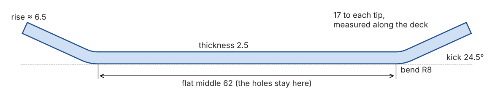

A PLTW Project asks you to use skills you already have to make something real, with clear requirements and limits.
🎯 Your goal
- I can apply two design extensions without breaking a tested fit.
- I can ride-test a design and compare it with what I designed.
- I can plan a version-2 change from my test results.
🧰 You’ll need
- Your Week 9 deck in Onshape and your printed board
- Onshape Unit 2.5 “Now Shred!” lesson
- Ride-test log
- The deck planner on this page
⏳ Time and limits
- 3 class meetings (Mon Mar 15, Tue Mar 16, Thu Mar 18)
- Do not move the holes or change the Week 9 clearance.
- Two extensions only.
- Submit by the end of Tuesday’s block. It prints Wednesday.
Step-by-step plan
Follow the steps in order. The minutes are a guide. Check off each checkpoint before you move on.
Monday · 47 min
- 10 minWatch the video.
- 15 minUse the deck planner to try outlines, graphics, and grip.
- 20 minPick your two extensions and sketch them in your notebook. Mark what stays locked.
- 2 minSave.
Checkpoint: Two extensions chosen and sketched.
Tuesday block · 85 min
- 5 minBefore photo of your Week 9 deck.
- 55 minApply your two extensions in Onshape.
- 10 minCheck: holes unchanged, no red features, still prints flat.
- 10 minExport and submit before the bell.
- 5 minSubmit the 2.5 exit ticket.
Checkpoint: Custom deck submitted. It prints Wednesday.
Thursday block · 85 min
- 10 minPick up your deck and re-mount the trucks.
- 30 minRide-test: roll, pop, grind. Log honest results.
- 15 minReflection: designed vs. works, plus one version-2 change.
- 10 minTake the self-check quiz.
- 20 minAfter photo. Fill in your notebook slides and submit.
Checkpoint: Ride-test log and reflection are submitted.
Laptop or iPad?
| Task | 💻 Laptop | 📱 iPad |
|---|---|---|
| Adding a logo or text | Sketch text tool. Type with the keyboard. | Sketch text tool. The on-screen keyboard works. Zoom in to place it. |
| Before and after photos | Use a classmate’s iPad or the webcam. | Camera. Shoot both photos from the same angle. |
| Ride-test video (optional) | Not practical on a laptop. | Record a 10-second clip. Upload it to Google Drive and insert it on your notebook slide (Insert → Video), or attach it in Canvas. |
More device help: Laptop or iPad? The full guide.
Watch first: customize and ride-test
Read the transcript
You have a working fingerboard. This week, you make it yours, reprint it, and ride-test it. Choose two extensions from Onshape's Now Shred menu. Try a new outline or nose shape, add a logo, or add a grip pattern. But keep the fit fixed. Don't move the mounting holes, and don't change the clearance from Week 9. Check that your model has no broken, red features before you submit it. When your new deck comes back, re-mount the trucks and ride-test it. Do the trucks still mount? Does it roll straight? Can you pop the tail? Will it grind a ledge? Log honest results, and plan one change for version two.
Customize YOUR fingerboard
📚 Onshape lessons
Onshape Intro to CAD — Unit 2: Designing a Skateboard. Use lessons 2.5 (Now Shred! extensions). Each lesson has a slide deck and a student guide.
Pick two extensions from Onshape’s 2.5 menu, but apply them to the fingerboard deck you printed in Week 9 — a logo or graphic, a new outline or nose/tail shape, a grip pattern.
- Choose two extensions and apply them to your deck.
- Keep the fit fixed. Do not move the mounting holes or change the clearance from Week 9 — customize everything else freely.
- Check your model. Confirm there are no broken (red) features.
- Submit. Export the print file and submit it.
Between sessions: submit your file by the end of Tuesday’s block. Your teacher prints on Wednesday, so your customized deck will be waiting for Thursday’s block.
Capstone seed: “Design a skate park” is one of the 2.5 extension options. If you finish early, take it — a ramp or ledge module here is a real head start on your capstone section.
Extension: kicktails and concave
Real decks aren’t flat. The nose and tail kick up so you can pop an ollie, and the middle dips (concave) so your fingers grip. The reference board from Chapter 8 uses 24.5° kicks and 2 mm of concave. Adding kicktails counts as one of your two extensions (a new nose/tail shape).

Screencast: add kicktails in Onshape
Read the transcript
This is the Week 9 deck: flat, 96 × 32 mm. Now we'll add kicktails, so the nose and tail tip up like a real board. Keep your Week 9 deck safe. Click + at the bottom left → Create Part Studio. Rename the tab Kicktail Deck. Units are already mm: they belong to the whole document. Variables belong to one Part Studio, so make #hole again here: 2.3 mm, bolt + clearance. Sketch on the Front plane, press N. Draw the deck from the side: press L, click the left tip, both bends, and the right tip. Three lines: a flat middle through the origin, and a kick on each end. Dimension the flat middle: 62 mm. That keeps every bolt hole on flat deck. Each kick is 17 mm long. Kick angle: click the kick and the flat line, move until the small angle shows, type 24.5°. Same on the other side: 17 long, 24.5°. Round each bend with the sketch fillet: click the corner, type 8. A smooth bend is stronger. Both bends are rounded. Finish the sketch. Shift+E → Thin tab. Thin turns lines into a solid with a set thickness. Click the sketch in the list. Thickness 2.5 mm. Check Symmetric, so the deck grows out to both sides of the Front plane. Depth 32: that's the deck width. Now it's a bent slab with kicks, but the ends are still square. Sketch on the Top plane, press N. Draw the outline from the top, the Lesson 2.1 way. A center-point rectangle out to where the bends start, and a circle on each end, sized to the corners. The rectangle snaps to the deck edges, so it's fully defined: 32 wide. Extrude with Intersect. Intersect keeps only the deck that's inside the outline. Through all + Symmetric, so it cuts all the way up through the kicks. There it is: rounded nose and tail, kicked up. Holes, same as Week 9. Sketch on the flat top face. Press R, follow the yellow dotted line. 25 from the origin, 8 along, 6 across. Use your own truck numbers. Mirror across the Right plane for the second truck. Hole tool: Simple, diameter #hole, Through all. Click all eight corners. Every hole is on the flat middle, so the trucks mount flat. The kicktail deck: 32 wide, 2.5 thick, 24.5° kicks, 8 holes. From the side you see the kicks. It can't lie flat on the printer. Right-click the part → Export → 3MF. When you submit, tell your teacher: supports under the kicks.
- Make a new Part Studio, so your Week 9 deck stays untouched. Variables belong to one Part Studio, so make
#holeagain here. - On the Front plane, sketch the side profile: a 62 mm line centered on the origin, then a 17 mm line at each end, tilted up 24.5°. Add a sketch fillet of 8 mm at each bend.
- Extrude the sketch with Thin: thickness 2.5 mm, Symmetric, depth 32 (or 28).
- Shape the nose and tail: on the Top plane, sketch your outline and Extrude with Intersect, Through all, Symmetric. Seen from the top, a kicked deck is shorter, about 93 mm tip to tip, because the ends tilt up.
- Add the holes on the flat top face, the same way as Week 9: rectangle, Mirror, Hole tool with
#hole. - Stretch goal: concave. Onshape has no one-click concave. Compare your deck with the reference files below, which have 2 mm of concave.
🖨️ Printing a kicked deck
A deck with kicks can’t lie flat, so it needs supports under the kicks. Your Week 9 rule of “flat, no supports” doesn’t apply to this extension. Tell your teacher when you submit, so supports get turned on.
📦 Reference files
Print-ready decks with 24.5° kicks and 2 mm of concave, 96 mm along the deck: 96 × 32 mm · 96 × 28 mm (kit trucks). Their holes use the reference board’s Ø1.8 at 7.5 × 5.5 mm. Check the hole coupon from Chapter 8 before printing one for your trucks.
Try it: plan your custom deck
Try outlines, graphics, and grip patterns before you model them. Notice what you can't change: the mounting holes.
Ride-test — designed vs. works
This is where the fingerboard arc closes: not “did it model” or “did it print,” but does it actually work? Re-mount your trucks and wheels, run the ride-test, and log honest results — it’s the same question the capstone asks of the whole park later.
| Ride-test | Result / note |
|---|---|
| Trucks still mount (fit preserved after customizing)? | |
| Rolls straight? | |
| Can you ollie / pop the tail? | |
| Grinds on a rail or ledge edge? | |
| One change for version 2 |
Shaded column is yours to fill in.
What to submit
- Before/after photos of your deck.
- Your completed ride-test log.
- Short reflection — designed vs. works: did it work, and what’s your version-2 change?
- Exit ticket — Onshape’s 2.5 exit ticket plus your document link, submitted in Canvas.
How it’s graded
| What you do | Points |
|---|---|
| Onshape 2.5 (two complete extensions, no broken features, exit ticket) | 10 |
| Ride-test log complete + reflection (designed vs. works, v2 change) | 10 |
| Total | 20 |
Check your understanding
✅ Turn it in
Add it to your notebook slides first. Then submit on Canvas by Thursday at 11:59 pm: your notebook link and the slide numbers.